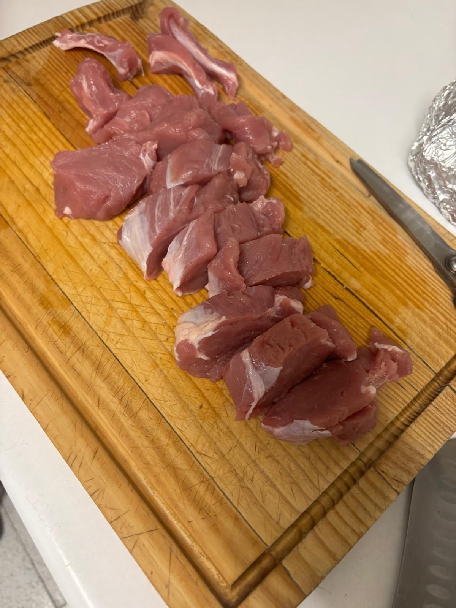
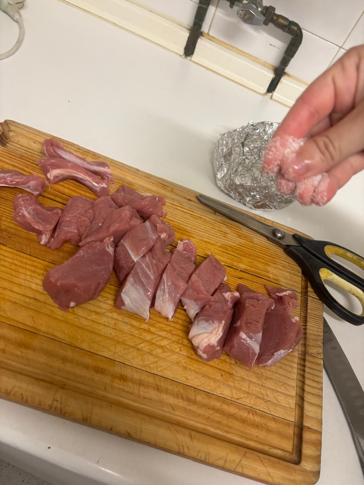
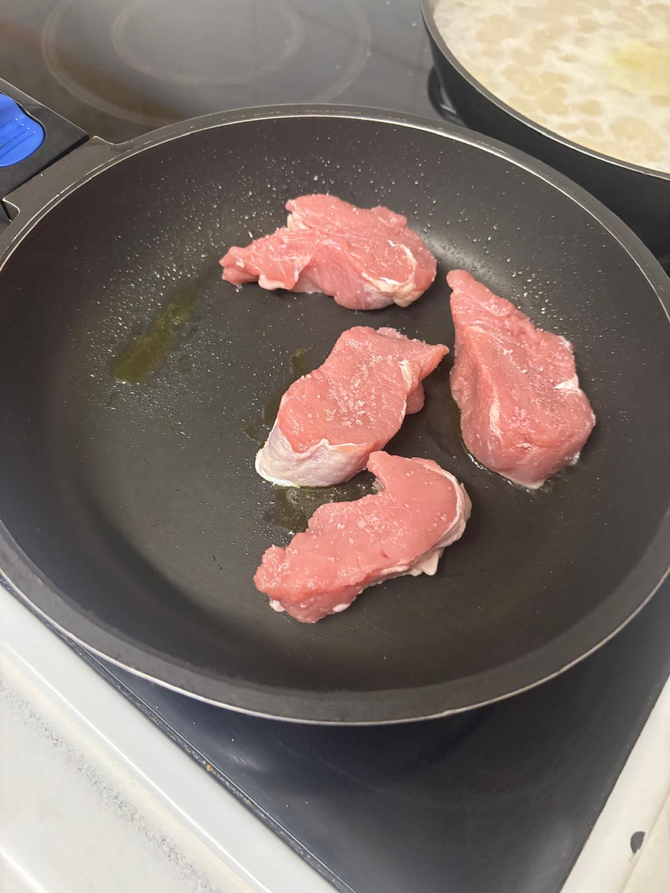
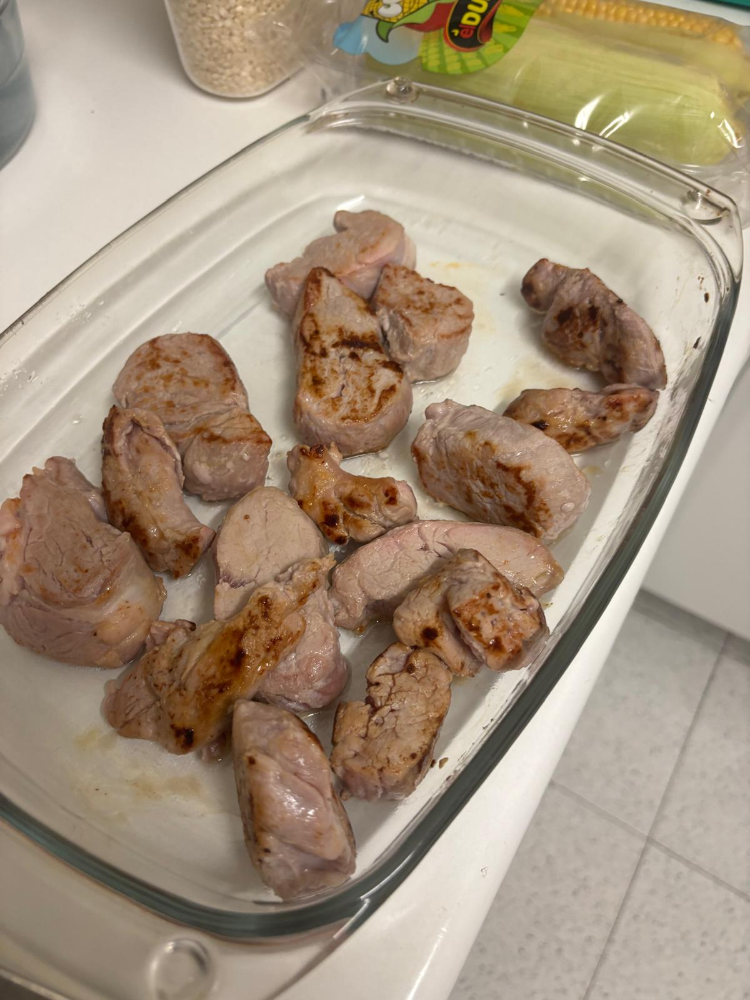
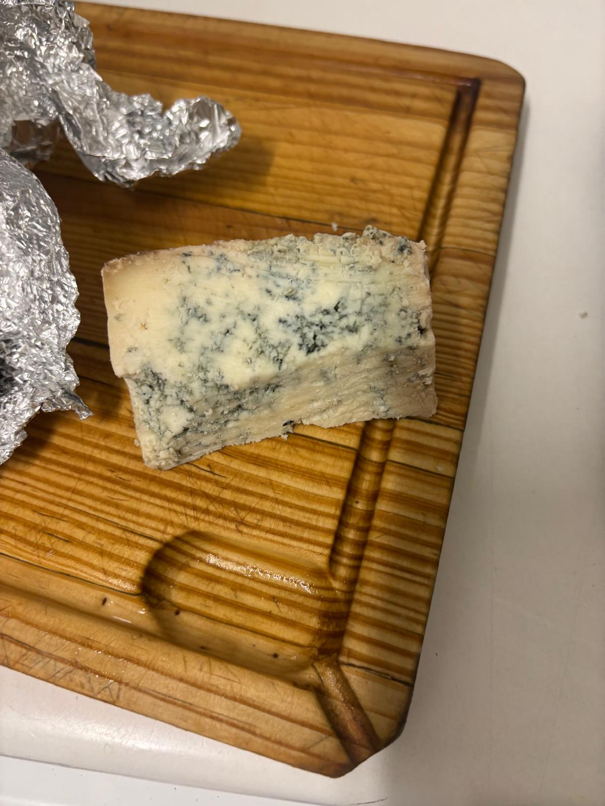
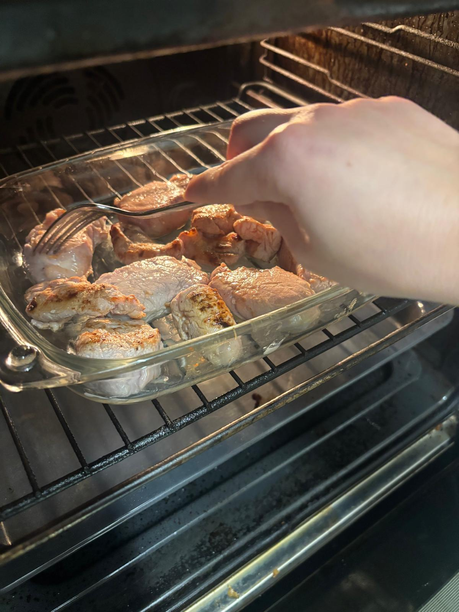
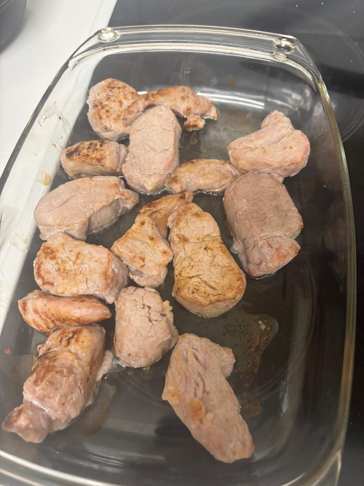
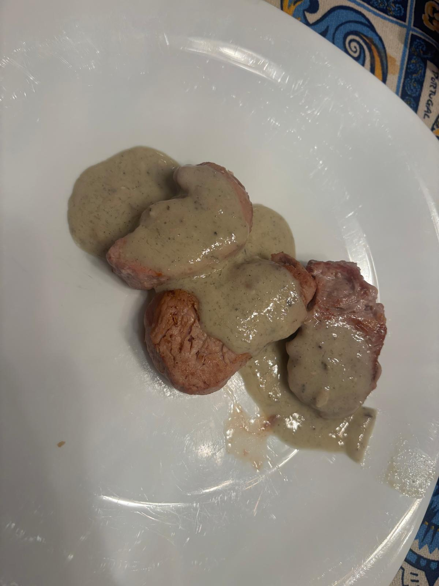

- Dejamos el solomillo 15 minutos a temperatura ambiente.
- Cortamos el solomillo en medallones de 1cm y salamos. Mientras, precalentamos el horno a 200 grados Celsius.
- Sellamos los medallones un poco, como 1min por cada lado.
- Hacemos la salsa: metemos el queso y la nata en una olla a fuego lento y dejamos que el queso se funda. Vamos probando, podemos añadir más queso o más nata al gusto.
- Metemos en el horno a 200 grados Celsius 3 minutos por cada lado.
- Listo para servir y comer.
 
 


 